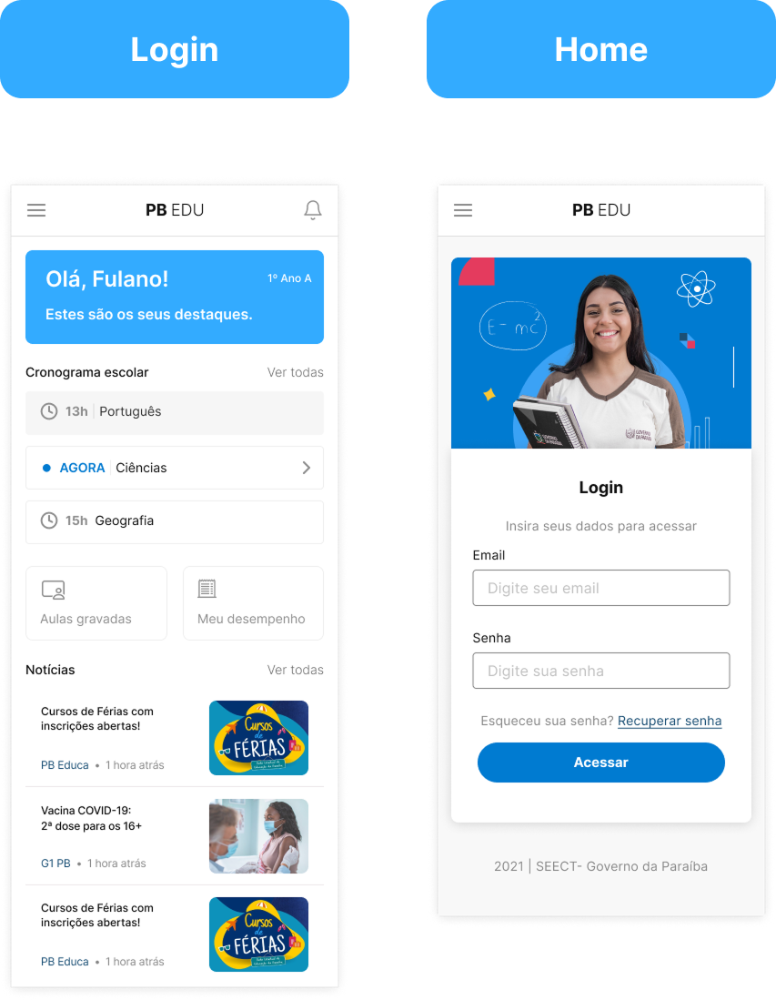
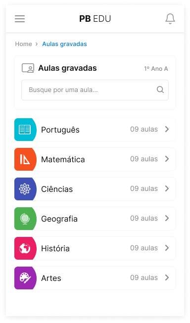
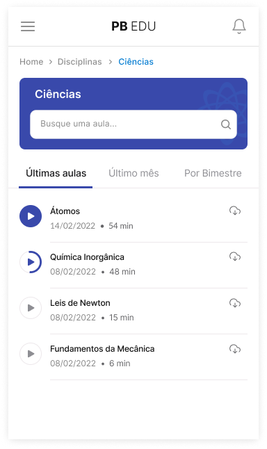
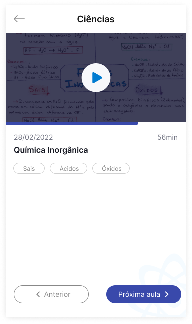
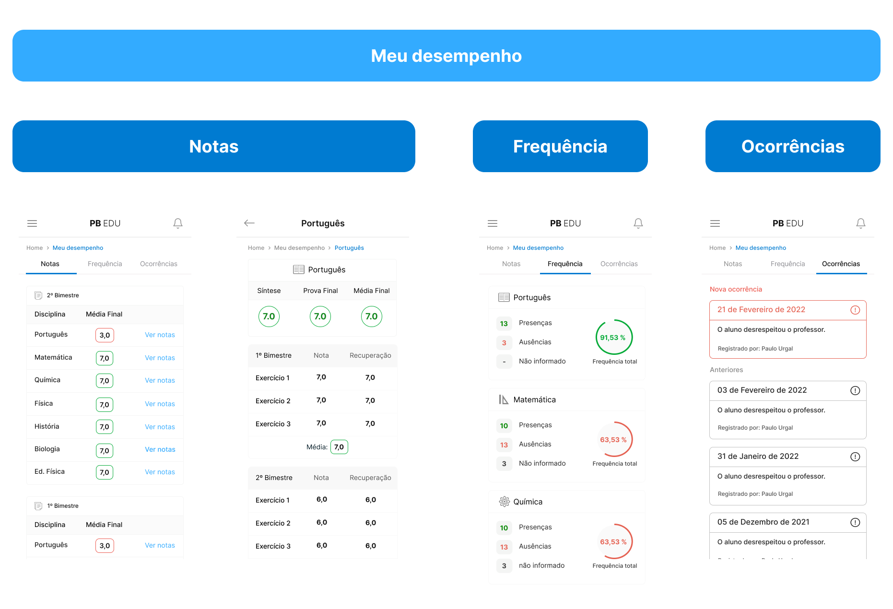
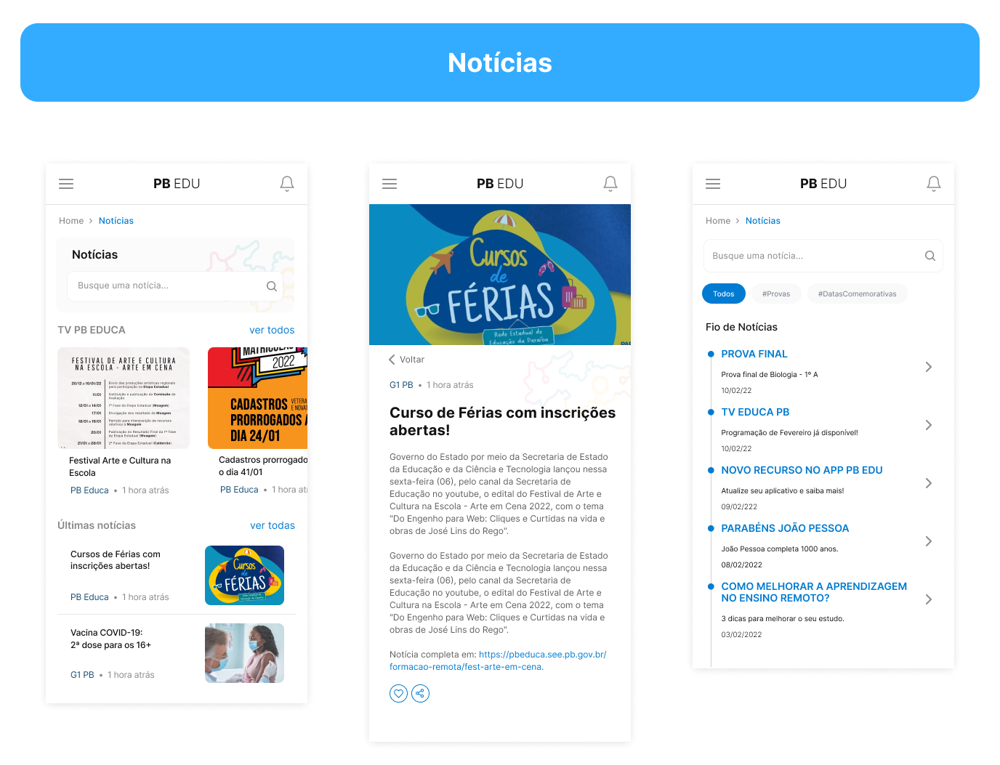

A vida escolar estava distribuída entre diferentes canais
Conteúdos, notícias, desempenho e serviços acadêmicos faziam parte de experiências distintas. O estudante precisava de um ponto central para acessar aquilo que importa no dia a dia.
A vida escolar em um único lugar.
Um aplicativo criado para reunir rotina escolar, conteúdos educacionais, desempenho, comunicação e processos de matrícula em uma experiência simples para estudantes da rede estadual da Paraíba.
O produto conecta diferentes momentos da vida escolar — aprender, acompanhar, se informar e resolver — dentro de uma experiência mobile contínua.
Produto
Aplicativo educacional
público
Estudantes da rede estadual
Plataforma
Mobile + web responsiva
ecossistema
PB Educa · SIAGE · SEECT

O PB-EDU integra comunicação, acompanhamento escolar e conteúdos educacionais, conectando-se ao SIAGE para matrícula e renovação.
Conteúdos, notícias, desempenho e serviços acadêmicos faziam parte de experiências distintas. O estudante precisava de um ponto central para acessar aquilo que importa no dia a dia.
O app precisava ser direto para uso recorrente no celular, mas completo o suficiente para reunir conteúdo, desempenho, comunicação e processos acadêmicos importantes.
Em vez de organizar o produto apenas pelos módulos internos, a arquitetura foi pensada a partir das principais coisas que o estudante precisava fazer.
Aulas gravadas e materiais.
Notas, frequência e vida escolar.
Cronograma e aula atual.
Notícias, comunicados e pesquisas.
Renovação e transferência.
Atuei na estruturação das jornadas, wireflows, prototipação, sistema visual, microcopy e acompanhamento da implementação.
Login, aulas, desempenho, notícias, pesquisas e matrícula.
Estruturação das jornadas antes da alta fidelidade.
Interfaces mobile e web responsiva.
Cards, listas, filtros, modais, formulários e estados.
Mensagens de confirmação, instrução e status.
Acompanhamento de implementação e consistência visual.
Antes de desenhar dashboards, precisei entender o que cada indicador significava e em quais situações ele realmente deveria aparecer.
Em vez de ser apenas um menu, a Home apresenta cronograma, destaca a aula atual, oferece atalhos para gravações e desempenho e mantém notícias próximas da rotina do estudante.

A jornada de aulas gravadas organiza a descoberta em uma sequência simples: disciplina, conteúdo, reprodução e material complementar.
Lista por área de estudo.
Busca e listagem de aulas.
Player dentro do contexto da disciplina.
Materiais de apoio em PDF ou links.





Os dois produtos atuam em camadas diferentes do mesmo ecossistema.
Mensagens de status ajudam o estudante a entender o que aconteceu e o que ainda precisa acontecer.
Confirmação explícita de conclusão.
Solicitação registrada sem sugerir conclusão.
Feedback para processamento ou análise.
Orientação em vez de tela vazia.